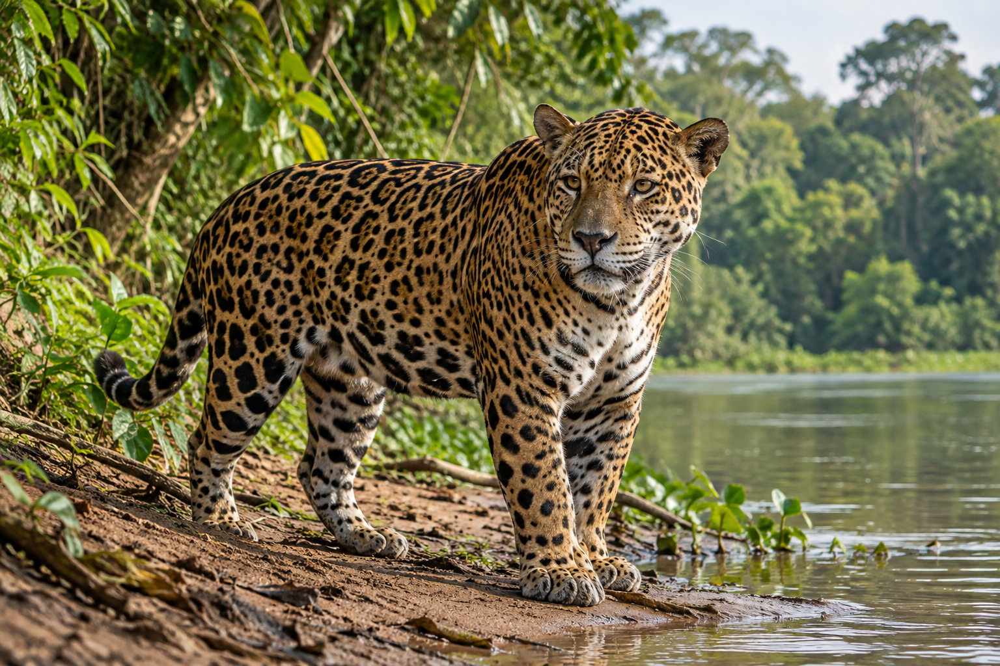
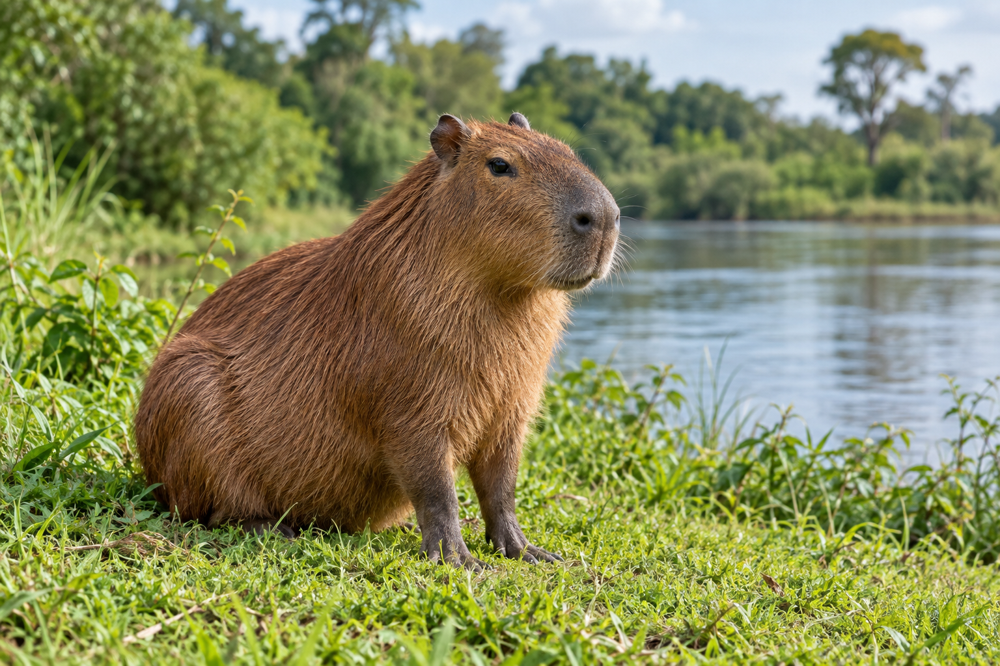

O Brasil é um dos países com maior diversidade de animais do planeta. Nesta página você conhece algumas das espécies mais marcantes da nossa fauna. Use os filtros para encontrar animais por bioma ou por tipo de alimentação.
Estado de Conservação (IUCN)
Pouco preocupante: a espécie não corre risco imediato.
Quase ameaçada: pode se tornar ameaçada em um futuro próximo.
Vulnerável: enfrenta risco alto de extinção na natureza.
Em perigo: enfrenta risco muito alto de extinção na natureza.
Onça-pintada

Onça-pintada
Nome científico
Panthera onca
Classe
Mamífero
Alimentação
Carnívoro
Biomas
Amazônia, Pantanal, Cerrado, Mata Atlântica e Caatinga
Estado de conservação
Quase ameaçada
Sobre a espécie
A onça-pintada é o maior felino das Américas e o terceiro maior do mundo, atrás apenas do tigre e do leão. Seu corpo é forte e compacto, e a pelagem amarelada é coberta por manchas em forma de rosetas. O desenho dessas manchas é único em cada animal, como uma impressão digital. É um animal solitário e de hábitos principalmente noturnos e crepusculares. Cada onça ocupa um território amplo, que percorre em busca de alimento. Diferentemente da maioria dos felinos, gosta de água e é uma excelente nadadora. No topo da cadeia alimentar, a onça-pintada caça animais como capivaras, queixadas, jacarés e veados. Sua mordida é uma das mais fortes entre os grandes felinos. Por controlar a população de outras espécies, ela ajuda a manter o equilíbrio dos ambientes onde vive.
Curiosidades
Um adulto costuma pesar entre 55 e 100 kg; no Pantanal, alguns machos passam disso. A gestação dura pouco mais de três meses e nascem de um a quatro filhotes. Existem onças de pelagem escura, chamadas de onças-pretas. As rosetas continuam lá, visíveis sob a luz certa.
Principais ameaças
Perda e fragmentação do habitat, caça e conflitos com a criação de gado.
Tucano-toco
Tucano-toco
Nome científico
Ramphastos toco
Classe
Ave
Alimentação
Onívoro
Biomas
Cerrado, Pantanal e bordas de matas
Estado de conservação
Pouco preocupante
Sobre a espécie
O tucano-toco é a maior espécie de tucano. Tem plumagem preta, garganta branca e um bico alaranjado com uma mancha escura na ponta, que pode chegar a cerca de 20 cm de comprimento. Ao contrário dos outros tucanos, prefere áreas abertas, como o Cerrado, em vez de florestas fechadas. Apesar do tamanho, o bico é leve: é formado por queratina e tem o interior cheio de pequenas cavidades. Ele serve para alcançar frutos em galhos finos, descascar alimentos e também para regular a temperatura do corpo, liberando calor nos dias quentes. Alimenta-se principalmente de frutos, mas também come insetos, ovos e filhotes de outras aves. Ao engolir frutos e espalhar as sementes por onde passa, o tucano-toco ajuda a regenerar a vegetação.
Curiosidades
Mede cerca de 55 a 65 cm de comprimento. Faz ninho em ocos de árvores e a fêmea costuma botar de dois a quatro ovos. Para dormir, vira a cabeça e apoia o bico sobre as costas.
Principais ameaças
Captura para o comércio ilegal de animais silvestres e perda de habitat.
Capivara

Capivara
Nome científico
Hydrochoerus hydrochaeris
Classe
Mamífero
Alimentação
Herbívoro
Biomas
Presente em quase todo o Brasil, sempre perto da água; inclui Amazônia, Cerrado, Pantanal e Mata Atlântica.
Estado de conservação
Pouco preocupante
Sobre a espécie
A capivara é o maior roedor do mundo. Um adulto pode passar de um metro de comprimento e pesar entre 35 e 65 kg. Tem corpo robusto, pelagem marrom e patas com pequenas membranas entre os dedos, que ajudam na natação. É um animal semiaquático: passa boa parte do dia dentro ou perto da água, onde se refresca e se protege de predadores. Os olhos, as orelhas e as narinas ficam no alto da cabeça, o que permite à capivara permanecer quase toda submersa e ainda assim observar o ambiente. Consegue ficar alguns minutos debaixo d'água sem respirar. Vive em grupos familiares, geralmente com dez a vinte indivíduos. Alimenta-se de gramíneas e plantas aquáticas e tem hábitos mais ativos no início da manhã e no fim da tarde.
Curiosidades
Seu nome vem do tupi e significa 'comedor de capim'. A gestação dura cerca de cinco meses. Os filhotes já nascem com pelos e de olhos abertos.
Convivência com as pessoas
A capivara se adaptou bem a áreas urbanas com rios e lagos. Ao encontrá-la, mantenha distância e não ofereça alimentos.